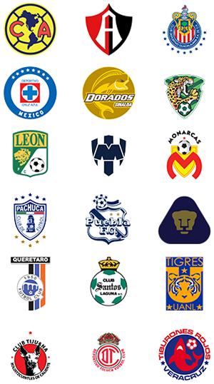
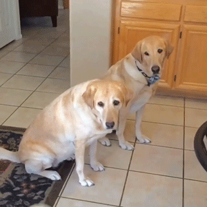
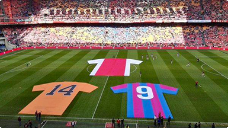
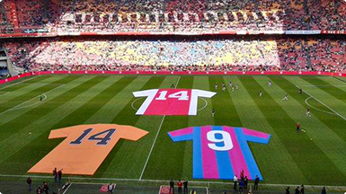

Bot
¿Qué es el bot? ¿Ya te volviste un terminator juan?
No, es una herramienta que te permitirá tener información, juegos y noticias de tu equipo favorito desde la comodidad de la app de Telegram... aunque estaría chido ponerse mamey como Schwarzenegger.
¿Y cómo funciona?
En base a comandos sencillos. Por ejemplo, al escribir "/start" en Telegram, mi servicio bot iniciará con un mensaje de bienvenida, para que te sientas todo un mirrey.
Chido juan , ¿pero y luego qué?
Usando el comando "/info", mi bot te dirá todo lo que puedes hacer. Desde suscribirte al canal de tu equipo favorito y cómo hacerlo, hasta poder tener una alegre charla de comadres con él.
Me late todo esto pero, ¿hay riesgo de que nos conquisten las máquinas?
Por el momento, no. Pero la verdad, juanitolover, no te prometo nada en un futuro
Equipos
Cuéntame juanito, ¿de cuáles equipos trae información tu bot?
Por el momento me enfocaré en el negocio local, los de la MX, pues. Checa mi lista:

¿Cómo me suscribo a uno de ellos? No me digas que cobras la millonada
Naaah, es totalmente gratis. Sólo necesitas la app Telegram y aprenderte unos comandos sencillos. "+NombreDelEquipo" te suscribe al canal y "-NombreDelEquipo" te desinscribe (te 'insuscribe, carnal' por si le vas al América)
¿Y si le voy al Carnes Supremas FC y no está en la lista?
Tú tranqui. Permanentemente estaré actualizando mi información, así que ten por seguro que tu equipo estará tarde o temprano. (Por lo menos antes de que se retire el Conejo)

Partidos
¿Partidos? ¿Y eso para qué es?
¡No te espantes! Esto es lo mejor de mi bot. Con esta herramienta tendrás información de partidos pasados, próximos y en vivo de tu equipo.
¡¿Neta?! Wow, ¿y cómo le pido a tu bot que me diga eso?
Un sencillo comando: "/horario NombreDelEquipo". Por ejemplo, si te gusta sufrir y le vas a Cruz Azul, sólo necesitas decirle a mi bot "/horario Cruz Azul" y él te dirá cuándo juega, cuándo jugó o si está jugando en ese momento.
Pero, ¿y si tengo memoria de teflón y se me olvidan los comandos?
Relax, campeón. Para eso es esta guía de usuario. Neta que seguirla es tan fácil que hasta tu mascota podrá usar mi bot.

Gaming
¿Gaming? Sííí, dime que vas a tener jueguitos
Pero claro que sí campeón. Ahí tendrás que demostrar si como roncas, duermes.
¿Y de qué son? ¿Puedo probar uno? ¿Puedo, puedo?
Claro que sí. Subiré quizzes, encuestas e imágenes para resolver. Te sentirás como cuando ibas a casa de tus cuates a jugar PS One. Te dejo un ejemplo:

En el homenaje a Cruyff qué número tenía la camiseta del Ajax
Ésa es muy fácil, pero ¿cómo le contesto al bot?
Fácil, Telegram te despliega el teclado con las respuestas posibles
Inténtalo
A ver, ahí voy
14

Wow, eres más crack para esto que Cristiano Ronaldo para modelar en calzones.
Ya me emocionaste, juanito. ¡Ya quiero usar tu bot!
¡Adelante! Úsalo, nadie te detiene. Mi trabajo es entretenerte como el álbum de estampitas del mundial. Diviértete y que el gusto te duro mucho más que a Messi su paraíso fiscal.